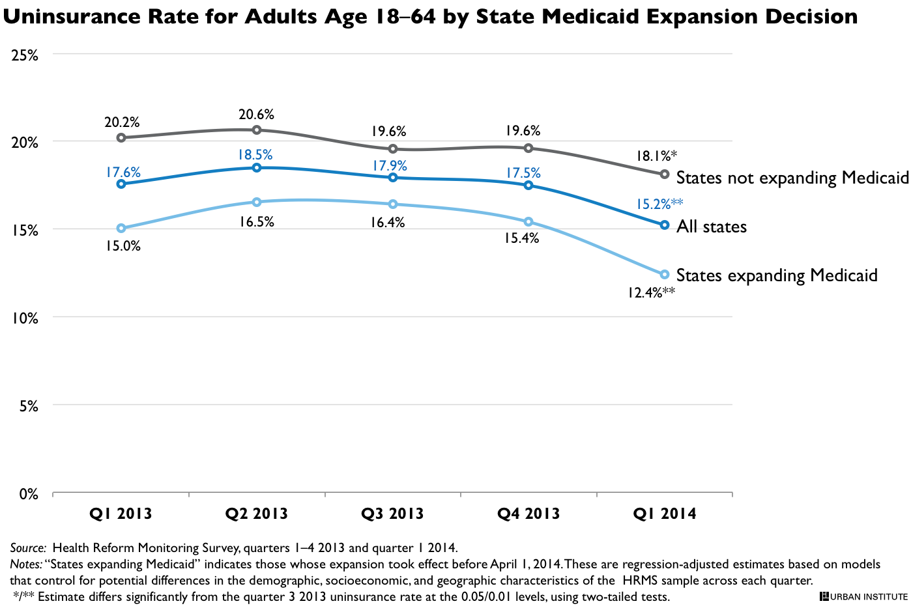

QuickTake: Number of Uninsured Adults Falls by 5.4 Million since 2013
Sharon K. Long, Genevieve M. Kenney, Stephen Zuckerman, Douglas Wissoker, Dana Goin, Michael Karpman, and Nathaniel AndersonApril 3, 2014
The Urban Institute's Health Reform Monitoring Survey (HRMS) has been tracking insurance coverage since the first quarter of 2013. Today, we report the first estimate of how the uninsurance rate has changed through early March 2014. These results track changes through most of the first Affordable Care Act's (ACA) open-enrollment period, which ended on March 31, 2014.
Analysis of data from the March 2014 HRMS shows the uninsurance rate for nonelderly adults (age 18–64) was 15.2 percent for the nation, a drop of 2.7 percentage points since September 2013, the month before ACA open enrollment began. This represents a gain in coverage for about 5.4 million adults.
States that implemented the ACA's Medicaid expansion saw a larger decline: their uninsurance rates for adults dropped 4.0 percentage points since September, compared with a drop of 1.5 percentage points for the nonexpanding states. The average uninsurance rate for adults in the 24 nonexpanding states was 18.1 percent in March 2014, well above the 12.4 percent average in the expansion states. 
These early estimates understate the full effects of the Affordable Care Act on the uninsured for two major reasons. First, the survey does not capture the enrollment surge that occurred at the end of the open enrollment period, because 80 percent of the responses to the March 2014 HRMS were provided by March 6, 2014. Second, these estimates do not reflect the effects of some important ACA provisions (such as the ability to keep dependents on health plans until age 26 and early state Medicaid expansions) that were implemented before 2013.
While expanded Medicaid eligibility is an important factor in the coverage gains in the expansion states, the difference in coverage gains between the states that did and did not expand Medicaid should not be entirely attributed to that policy decision. There were other policy choices that likely affected enrollment. For example, many of the nonexpansion states did not set up their own marketplaces and therefore did not get the same access to outreach and enrollment assistance funding.
Methods: Each round of the HRMS is weighted to be nationally representative. We use these weights along with a regression adjustment to control for differences in the demographic and socioeconomic characteristics of the respondents across the different rounds of the survey. This allows us to remove any variation in insurance coverage caused by changes in the types of people responding to the survey over time rather than by changes in the health insurance landscape. The basic patterns shown for the regression-adjusted measures are similar to those based solely on simple weighted estimates. We report the regression-adjusted estimates here. We will provide a more detailed analysis of these data that looks at changes in coverage for other population subgroups next week, with other analyses to follow regularly. |

 |
 |
 |